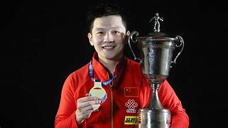
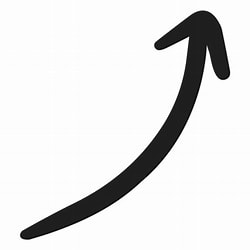

Home
Sobre
Destaque
Desafios
Medalhas
Contato
OS ÚLTIMOS 4 CAMPEÕES DAS OLIMPÍADAS
Olimpíada: Londres 2012 – Zhang Jike – China
Rio 2016 – Ma Long – China
Tóquio 2020 – Ma Long – China
Paris 2024 – Fan Zhendong – China
SENDO FAN ZHENDONG O ÚLTIMO CAMPEÃO

